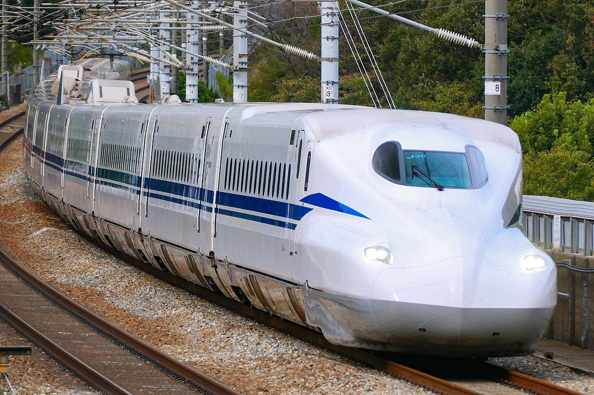
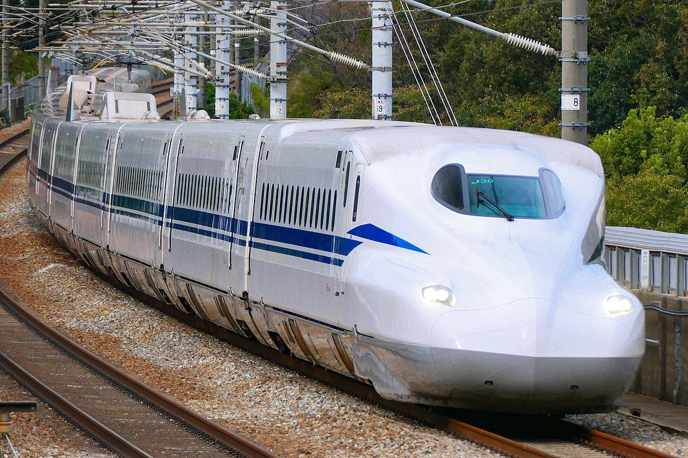

Trains
Trains are a form of rail transport consisting of a series of connected vehicles that generally run along a railroad track to transport cargo or passengers.
Trains are a form of rail transport consisting of a series of connected vehicles that generally run along a railroad track to transport cargo or passengers.
The history of trains dates back to the 6th century B.C. In the modern world, the British engineer George Stephenson built the first public inter-city railway line in the world to use steam locomotives, the Liverpool and Manchester Railway, which opened in 1830.
There are many different types of trains, including freight trains, passenger trains, subway trains, monorails, and high-speed rail. Each type of train serves a specific purpose and has its own unique features.
The future of trains looks promising with advancements in technology. Concepts like hyperloop and maglev trains could revolutionize the way we think about rail transport. Additionally, the push for more sustainable and energy-efficient transport could see more electric trains in the future.